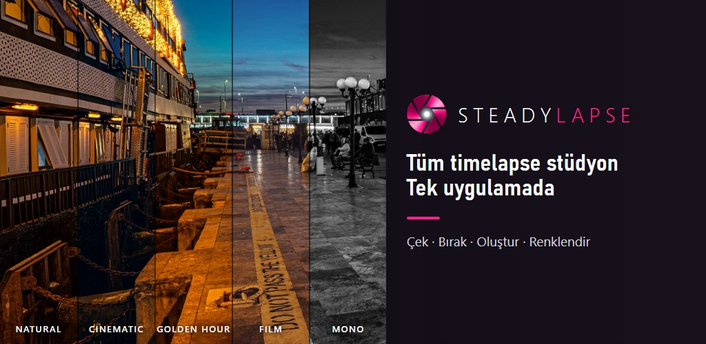

ÇEK · BIRAK · OLUŞTUR · RENKLENDİR
Kur. Ekranı kapat. Uzaklaş. Bulutlar koşar, şehir nabız gibi atar, bir resim kâğıtta belirir — sen yokken video, seçtiğin görünümle kendiliğinden oluşur. Görünümü sonra istediğin kadar değiştir.
Google Play'den indir Ücretsiz başla · Reklam yok · Hesap yok · Filigran yok
Zamanı görünür kıl
Saatler saniyeye dönüşür. Dünya, gözle görülemeyecek kadar yavaş değişir — Steadylapse bunu izlemeni sağlar.
Bilgisayar yok, aralık zamanlayıcı kablosu yok, montaj yok. Sadece sabit bir yerde duran telefonun.
20 hazır senaryodan birini seç — bulut, trafik, inşaat, gün batımı — ya da aralığı ve kare sayısını kendin belirle. Çekim süresini ve videonun uzunluğunu başlamadan görürsün.
Ekranı kapat. Steadylapse saatlerce çekmeye devam eder, her kareye geri sayar; telefon ısınırsa ekranı karartıp seni uyarır.
Son kare çekilince timelapse, seçtiğin renk görünümüyle telefonunda oluşturulur ve galerine kaydedilir — uygulamadan çıkmış olsan bile.
Kareler hep doğal çekilir. Renk, video oluşturulurken uygulanır — böylece çekimden önce dener, çekimden sonra istediğin kadar değiştirirsin. Asıl dosyan hiçbir zaman üzerine yazılmaz.

Bir deneme karesi çek ve 8 görünüm arasında dolaş: Natural, Auto, Mono, Cinematic, Dramatic, Vivid, Golden Hour ve Film.
Özet kartında başka bir görünüm seç, yeni bir sürüm oluştur. İlk videon olduğu gibi kalır.
Galerideki eski çekimlerini ya da telefonundaki herhangi bir videoyu yeniden oluştur. Önizleme ücretsiz; renk efektiyle oluşturmak PRO.
On dakikalık bir gökyüzünden bir mevsim süren inşaata kadar. Nereden başlayacağın aşağıda — hazır senaryolar sayıları senin yerine ayarlar.
Klasik. Hızlı bulutlar sakin bir gökyüzünü hareket hâlindeki bir havaya çevirir.
BAŞLANGIÇ · 2–5 sn ARALIKHiç durmayan sokaklar. Daha yavaş manuel enstantane PRO ile farlar ışık şeritlerine dönüşür.
BAŞLANGIÇ · 1–2 sn ARALIKAltın saatten mavi saate. Holy Grail PROBETA azalan ışığı kare kare takip eder.
GÜN BATIMINDAN 30 DK ÖNCE · 3–6 snHaftaların emeği saniyelerde. Ghost Frame PRO bugünkü kadrajı dünküyle hizalar.
BAŞLANGIÇ · 1–5 dk ARALIKFideler uzar, çiçekler açar ve ışığa döner. Sabrın sıkıştırılmış hâli.
BAŞLANGIÇ · 5–15 dk ARALIKBir ders çalışma oturumu, bir resim, masandaki bir proje — saatlerce süren emek bir dakikada. Ön kamera ücretsiz.
BAŞLANGIÇ · 3–10 sn ARALIKHer şey telefonundan okunur: bir lens bir şeyi yapamıyorsa Steadylapse bunu söyler; sessizce çalışmayan bir ayar göstermez.
Ekran kapalıyken arka planda çeker. Eco mod, ısı koruması ve canlı "kalan süre" uzun çekimleri yolunda tutar — yarıda kalan çekim kurtarılır.
Manuel ISO, enstantane, beyaz dengesi ön ayarları ve odak — ayrıca her kareyi tutarlı tutan ücretsiz pozlama, odak ve beyaz dengesi kilitleri.
Ana ve ön kamera ücretsiz; ultra geniş ve telefoto PRO ile — telefonun uygulamalara ne açıyorsa, gerçek zoom aralığıyla. İki parmakla yakınlaştır, kaydırarak değiştir.
Bir bahçeyi ya da inşaatı günlerce mi çekiyorsun? Dünkü son kare canlı görüntünün üstüne biner; bıraktığın yeri tam olarak yakalarsın.
1080p, destekleyen telefonlarda 4K PRO. 24 fps, destekleniyorsa 30 fps; dikey ya da yatay. Ücretsiz sürümde bile filigran yok, süre sınırı yok.
Cinematic'ten Film'e 8 görünüm. Deneme karesinde ücretsiz önizle, PRO ile videoyu oluştur — ve her çekimin görünümünü sonra değiştir.
Her kareyi JPEG, RAW DNG ya da ikisi birden sakla — Lightroom'a hazır. Her çekim kendi klasöründe. DNG, destekleyen telefon ve lenslerde.
Aynı sahneyi tekrar tekrar mı çekiyorsun? Tüm ayarlarını bir adla kaydet, sonraki çekimde yükle. Telefonunun yapamadığı bir şey varsa atlanır ve uygulama söyler.
Gün ışığı azalırken ISO ve enstantane kare kare, yavaş yavaş ayarlanır ve ışığı alacakaranlığa kadar izler. Beta aşamasında: sonuç telefonunun kamerasına bağlıdır.
Kur · Bırak
Filmine geri dön
Kamera uygulamandaki timelapse modu her şeyi senin yerine seçer. Hızlı bir klip için harika. Steadylapse ise karar vermek istediğin zamanlar için.
| Tipik dahili mod | Steadylapse | |
|---|---|---|
| Aralığı ve kare sayısını seç — videonun uzunluğunu başlamadan gör | Hızı senin yerine seçer | Saniyesine kadar senin kararın |
| Ekran kapalı saatlerce çek — yarıda kalan çekimi kurtar | Değişir | Tam bunun için yapıldı |
| Çok günlük projeyi dünkü kareyle hizala | Yok | Ghost Frame PRO |
| Tutarlı kareler için manuel ISO, enstantane, beyaz dengesi ve kilitler | Yok | Tam kontrol |
| Düzenleme için her kareyi — JPEG ya da RAW (DNG) — sakla | Sadece video | Her kare PRO |
| Çekimden sonra renk görünümünü, asıl karelerden değiştir | Bitmiş videoya filtre | 8 görünüm, istediğin zaman yeniden oluştur |
| Aynı sahnenin sonraki çekimi için ayarlarını kaydet | — | My Setups |
| Telefonunun kamerasının neyi yapıp neyi yapamadığını gör | — | Cihazından okunur |
Dahili modlar telefona ve markaya göre değişir. Birçok telefonun kendi gece modu, uygulamalara izin verilenden çok daha uzun pozlama yapabilir — yıldızlar ve koyu gece için telefonunun kendi kamerası daha iyi olabilir.
Abartılı vaat yok, takip yok, sürpriz yok. Steadylapse'i bağımsız bir fotoğrafçı ve geliştirici olan Emrah Üstdağ yapıyor — arkasında bir şirket yok.
Her lens, ISO aralığı ve enstantane cihazından gelir. Desteklenmeyen bir şey varsa uygulama bunu söyler — telefonunun sınırlarını uygulama içinde görebilirsin.
Hesap yok, giriş yok, çekimlerin üzerinde analiz yok. Kareler ve videolar galerine kaydedilir, telefonundan hiç çıkmaz.
Reklam yok, filigran yok, süre sınırı yok, proje sınırı yok. PRO araç ekler — videolarını rehin tutmaz.
Ücretsiz sürümde süre sınırı, filigran ve reklam yok.
Fotoğrafçıların ilk sorduklarına kısa cevaplar.
Telefonunun dahili modu hızı ve pozlamayı senin yerine seçer ve sana bir video verir. Steadylapse aralığı ve uzunluğu seçmeni, saatlerce ya da günlerce çekmeni, pozlamayı ve beyaz dengesini kendin ayarlamanı, çok günlük projeleri hizalamanı ve tüm kareleri saklamanı sağlar. Hızlı bir klip istiyorsan dahili mod yeterli; kontrol istiyorsan Steadylapse tam bunun için.
Sekiz renk görünümü (Natural, Auto, Mono, Cinematic, Dramatic, Vivid, Golden Hour, Film). Kareler hep doğal çekilir, görünüm video oluşturulurken uygulanır; böylece aynı çekimi istediğin zaman başka bir görünümle yeniden oluşturabilirsin. Kareleri sakladıysan yeni sürüm karelerden yapılır; saklamadıysan videonun kendisi yeniden renklendirilir. Asıl dosya hiçbir zaman üzerine yazılmaz. Önizleme ücretsiz; renk efektiyle oluşturmak PRO.
Evet, PRO ile, RAW'u uygulamalara açan telefon ve lenslerde. Keep All Frames altında JPEG, DNG ya da ikisini seç. DNG dosyaları büyüktür ve kaydedilmesi daha uzun sürer; bu yüzden Steadylapse telefonunun güvenli en kısa aralığını ölçer ve DNG çekimin telefonunun yazabileceğinden hızlı çalışmasına izin vermez.
Evet — en sevilen kullanımlardan biri. Ön kamera ücretsiz, ekran saatlerce kapalı kalabilir ve işin bittiğinde video hazırdır.
Evet. Steadylapse bildirimli bir ön plan hizmeti olarak çalışır; Android onu ekran kapalıyken de açık tutar. Gece boyu çekimlerde telefonu şarjda tut ve o gece için otomatik yeniden başlatmayı ve uygulama güncellemelerini kapat — uygulama içindeki kontrol listesi adım adım anlatır.
Genelde hayır. Telefonlar, başka uygulamaların tek bir kareyi ne kadar uzun pozlayabileceğini sınırlar ve bu sınır telefona göre çok değişir: bazılarında bir saniyenin altında, bazılarında birkaç saniye. Çoğu telefonda bu, dahili gece modundan çok daha kısadır. Bu alacakaranlık, şehir ışıkları ve ay için yeterli, ama sönük yıldızlar için yetmez. Steadylapse telefonunun gerçek sınırlarını okuyup gösterir; çekimden önce bilirsin.
Beta aşamasında. Pozlamayı gün ışığından alacakaranlığa yumuşakça taşır; telefonun izin verdiği en uzun pozlamaya ulaşınca video yavaşça kararır. Sonuç telefonunun kamerasına bağlıdır, önce kısa bir deneme çekimi yap. En iyi geçiş için gün batımından yaklaşık 30 dakika önce başla.
Kareler çekildikçe telefonuna kaydedilir. Pil biterse ya da telefon yeniden başlarsa, Steadylapse uygulamayı bir sonraki açışında bu kareleri bulur; videoyu oluşturabilir ya da kareleri saklayabilirsin.
Kamerası olan Android 10 ve üstü telefonlarda. Lensler, 4K, manuel ayarlar ve pozlama aralığı telefona göre değişir — Steadylapse bunları cihazından okur ve telefonunun desteklemediği her şeyi açıkça işaretler. Samsung Galaxy, Google Pixel ve Xiaomi telefonlarda ve bir Galaxy tablette test edildi.
Hayır. PRO Google hesabına bağlıdır: aynı hesapla açılmış herhangi bir telefonda Steadylapse'i açınca PRO geri gelir. İnternetin olmadığı arazide de açık kalır.
Hayır. Hesap ve giriş yok. Uygulama internete yalnızca Google Play üzerinden fiyatları göstermek ve satın almaları yapmak için çıkar. Fotoğrafların telefonundan çıkmaz.
Uygulamanın arayüzü İngilizcedir.

Telefonunu sabit bir yere koy, bir sahne seç ve saatlerin geçmesine izin ver.
Google Play'den indir Ücretsiz başla · Reklam yok · Hesap yok